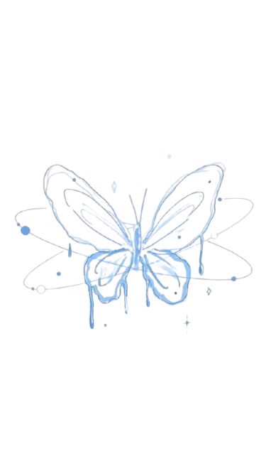

Butterflies are captivating creature, known for thier vibrant wings and graceful flight.
Butterflies are insects in the order Lepidoptera, which also includes moths. They are known for their often brightly colored wings, which are covered in tiny scales. Butterflies undergo a complete metamorphosis,
meaning they have four distinct life stages: egg, larva (caterpillar), pupa (chrysalis), and adult
